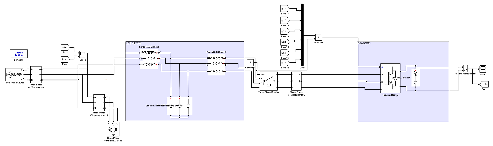
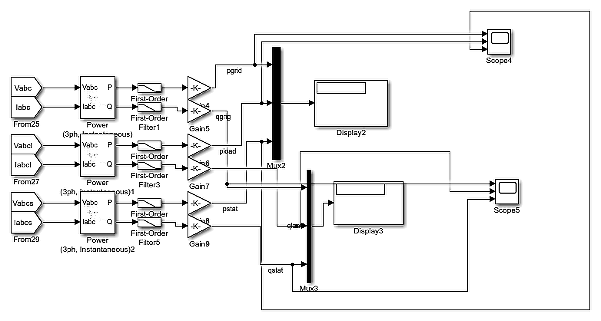
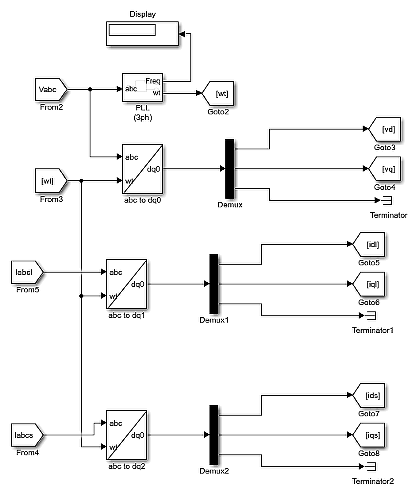
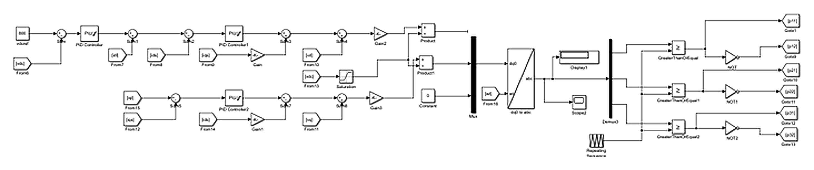

Narrative Flow: Each compensation technology emerged to solve the engineering limitations of the one before it.
The useful power consumed by loads to produce mechanical shaft torque, heat, or illumination: \(P = V I \cos\varphi\).
Required by inductive loads (induction motors, transformers, reactors) to build their magnetic fields. It oscillates back and forth between source and load: \(Q = V I \sin\varphi\).
The vector sum of \(P\) and \(Q\). Generators, transformers, and transmission cables must be sized to carry the full apparent power \(S = V I\).
Inductive reactive current \(I_Q\) flowing through line reactance \(X_L\) causes a direct voltage drop across transmission and distribution lines, degrading voltage stability at load buses:
For a fixed active power \(P\), a lower power factor forces the network to carry much higher total current, increasing thermal \(I^2R\) losses quadratically in cables and transformers:
Reactive current occupies transformer and cable kVA ratings without delivering real work. Utilities impose financial penalties when industrial power factor falls below \(0.90\text{–}0.92\).
Rapidly fluctuating inductive loads (such as electric arc furnaces, rolling mills, and large motor starts) draw erratic \(Q(t)\), causing rapid voltage oscillations and risk of voltage collapse.
Instead of forcing reactive power \(Q_L\) to travel all the way from utility generators through transformers and transmission lines, we connect a Shunt Compensator in parallel directly at the Load Bus.
The compensator supplies capacitive reactive power \(Q_C\) locally to the load, so the net reactive power drawn from the upstream grid drops to \(Q_{\text{grid}} = Q_L - Q_C \approx 0\).
By eliminating reactive current from the upstream feeder, total line current \(I_{\text{grid}}\) drops significantly — cutting feeder voltage drop \(\Delta V\), reducing thermal \(I^2R\) copper losses, and freeing up transformer and cable kVA capacity for useful active loads.
Passive Capacitive Compensation — Fixed & Automatic Contactor-Switched Banks
An inductive motor draws lagging current \(I_L\), whereas a shunt capacitor draws current \(I_C\) that leads voltage \(V\) by \(90^\circ\) (`\(180^\circ\)` opposed to \(I_{LQ}\)). Reactive energy exchanges locally between capacitor and motor without loading the upstream feeder.
Because admittance \(B_C = \omega C\) is fixed, reactive power output is proportional to the square of terminal voltage:
When grid voltage sags during a disturbance, the capacitor loses 51% of its reactive output right when the network needs maximum voltage support.
By far the most economical technology per kVAR/MVAR to supply bulk reactive power compensation across industrial plants and distribution feeders.
Dielectric losses are less than \(0.05\%\text{–}0.1\%\) of rated kVAR — giving shunt capacitors the highest electrical efficiency of all four compensation methods.
100% static installation with zero rotating parts or complex gate-drive electronics; faulty capacitor cans are easily replaced and stages can be expanded modularly.
Requires only periodic visual and thermal inspection of mechanical contactors, HRC protection fuses, discharge resistors, and detuning reactors.
Can only inject leading \(+Q\); cannot absorb excess inductive \(-Q\) during light-load or off-peak conditions, risking severe overvoltage (Ferranti Effect).
Switched in discrete steps by mechanical contactors/breakers taking seconds to minutes, plus a mandatory \(3\text{–}5\text{ min}\) discharge delay before re-closing any disconnected stage.
Reactive output collapses with the square of bus voltage during grid sags — losing \(51\%\) of rated kVAR at \(V = 0.70\text{ pu}\) right when voltage support is needed most.
Forms a parallel resonant circuit with grid inductance that amplifies harmonics and causes high capacitive inrush currents upon switching:
Rotating Synchronous Machine Operating at No Mechanical Load for Dynamic VAR & Inertia Support
A 3-phase synchronous machine connected in parallel with the grid running with no mechanical shaft load at synchronous speed \(N_s\) (\(1500\text{ rpm}\) at \(50\text{ Hz}\)). An Automatic Voltage Regulator (AVR) adjusts DC rotor field current \(I_f\) to vary internal induced EMF \(E_f\).
Because a synchronous rotor has zero starting torque at \(50\text{ Hz}\), it is accelerated to synchronous speed \(N_s\) prior to breaker closure using an auxiliary Pony Motor on the shaft or a solid-state Static Frequency Converter (SFC).
Plotting stator armature current \(I_a\) against DC field current \(I_f\) produces the classic V-Curve:
• Minimum Point (\(E_f \approx V\)): Unity PF (\(Q = 0\)) — draws only small active current for friction, windage & copper losses.
• Right of Minimum (\(I_f \uparrow\)): Over-excited — injects continuous capacitive \(+Q\).
• Left of Minimum (\(I_f \downarrow\)): Under-excited — absorbs continuous inductive \(-Q\).
Unlike power-electronic converters, the heavy steel rotor stores kinetic energy \(E_k = \frac{1}{2}J\omega_m^2\), providing physical Mechanical Inertia (\(H \approx 1.2\text{–}3.0\text{ s}\)) that limits Rate of Change of Frequency (RoCoF) and injects \(4\text{–}6\text{ pu}\) fault current.
Continuously regulates reactive power from inductive absorption to capacitive injection via DC field current \(I_f\) with zero switching transients.
The only shunt compensator that physically stabilizes grid frequency (limits RoCoF) and supplies \(4\text{–}6\text{ pu}\) short-circuit current to trip protection relays.
Internal EMF \(E_f\) supports bus voltage immediately during grid sags; Field Forcing delivers up to \(2.0\times\) rated MVAR for several seconds during faults.
Generates zero switching harmonics (requiring no harmonic filter yards) and offers a rugged utility service life of \(35\text{–}40+\text{ years}\).
Limited by the large magnetic time constant \(T'_{d0}\) of the rotor field winding — too slow to track rapid cycle-by-cycle industrial load fluctuations or arc-furnace flicker.
Suffers from continuous stator and rotor \(I^2R\) copper losses, iron core losses, bearing friction, windage, and cooling auxiliary power consumption.
Rotating shaft, high-speed bearings, lube-oil pumps, brushes/exciters, and air/hydrogen/water cooling systems require frequent scheduled maintenance.
Requires an auxiliary Pony Motor or Static Frequency Converter (SFC), synchronization equipment, massive reinforced concrete foundations, and acoustic enclosures.
First-Generation Shunt FACTS Controller — Thyristor-Controlled & Switched Susceptance
Anti-parallel thyristor valve pair at the top in series with an air-core reactor \(L_{\text{TCR}}\). Phase-controlling firing angle \(\alpha \in [90^\circ, 180^\circ]\) absorbs variable inductive reactive power \(-Q_L(\alpha)\) smoothly.
Anti-parallel thyristor valve pair switches capacitor bank \(C_{\text{TSC}}\) strictly ON or OFF at zero valve voltage (\(v_T = 0\)) to supply discrete capacitive steps \(+Q_C\) with zero inrush transients.
Series tuning reactor \(L_F\) on top of capacitor \(C_F\) absorbs \(5\text{th}\) & \(7\text{th}\) odd harmonics generated by the TCR (while 3rd harmonics are trapped in \(\Delta\)) and provides base capacitive \(+Q_C\).
Delaying the thyristor gate trigger pulse from \(\alpha = 90^\circ\) (full conduction, \(\sigma = 180^\circ\)) to \(\alpha = 180^\circ\) (zero conduction, \(\sigma = 0^\circ\)) controls fundamental inductive susceptance:
In a balanced 3-phase \(\Delta\)-connected TCR, all triplen harmonics (\(3\text{rd}, 9\text{th}, 15\text{th}\)) circulate inside the closed \(\Delta\) loop and never enter the utility grid — so only \(5\text{th}\) and \(7\text{th}\) tuned filters are needed.
Between \(I_{C,\max}\) and \(I_{L,\max}\), the PI controller continuously adjusts \(\alpha\) to hold bus voltage along a slight droop slope \(X_{\text{SL}} \approx 2\%\text{–}5\%\):
All TSCs are ON and the TCR is fully OFF (\(\alpha = 180^\circ\)). The SVC acts as a fixed capacitor \(B_{C,\max}\), so maximum reactive output drops with \(Q_{\max} = V^2 B_{C,\max}\).
All TSCs are OFF and the TCR conducts fully (\(\alpha = 90^\circ\)), acting as a fixed reactor \(B_{L,\max}\) to absorb excess \(-Q\) during overvoltages.
Solid-state thyristor phase control responds within \(1\text{–}2\text{ cycles}\), tracking rapid industrial load swings and suppressing arc-furnace voltage flicker.
Combines zero-transient TSC/FC capacitive banks with vernier TCR inductive phase control for smooth, stepless reactive power regulation.
Eliminates rotating shafts, pony motors, bearing wear, and synchronization gear, greatly reducing mechanical maintenance compared to synchronous condensers.
Decades of proven high-power utility reliability with rugged line-commutated thyristors at a lower capital cost than VSC-based STATCOMs.
Once pushed to its capacitive limit during a deep voltage sag, the SVC becomes a fixed capacitor \(B_{C,\max}\) — losing \(51\%\) of its reactive output at \(V = 0.70\text{ pu}\).
Phase-controlled TCRs chop the sinusoidal current waveform and inject odd harmonics into the MV bus, requiring large, mandatory passive LC filter banks.
Large air-core reactors, TSC capacitor banks, and dedicated passive harmonic filter yards occupy \(2\times\) to \(3\times\) the substation land area of an equivalent STATCOM.
Provides no physical mechanical inertia to limit frequency RoCoF, and its large shunt capacitance can trigger LC resonance in weak grids (low ESCR).
Static Synchronous Compensator — Gate-Commutated IGBT Voltage-Source Converter (VSC)
Unlike an SVC (which switches passive capacitors and reactors), a STATCOM uses a Voltage-Source Inverter (VSI) built with self-commutated IGBT switches to synthesize a controllable 3-phase AC voltage \(V_{\text{conv}}\) from a regulated DC-link capacitor.
• When \(V_{\text{conv}} > V_{\text{grid}}\): current leads grid voltage by \(90^\circ\) and injects capacitive \(+Q\) into the bus.
• When \(V_{\text{conv}} < V_{\text{grid}}\): current lags by \(90^\circ\) and absorbs inductive \(-Q\) from the grid.
The IGBT bridge acts as a constant current source \(I_{\max}\) independent of grid voltage sag:


• Three-Phase Source & Parallel RLC Load: Models the utility grid feeding an inductive industrial load with three-phase V–I measurement blocks (Vabc, Iabcl, Iabcs).
• LCL Filter: Series inductors and shunt capacitor bank connecting the VSI bridge to the PCC — smooths converter current and blocks high-frequency PWM switching harmonics.
• Universal Bridge (IGBT VSI) & DC Link: Six-switch IGBT bridge fed by an \(800\text{ V}\) DC energy-storage capacitor (vdc).
Computes instantaneous 3-phase active power \(P\) and reactive power \(Q\) for the Grid (pgrid, qgrid), Load (pload, qload), and STATCOM (pstat, qstat), passes them through 1st-order low-pass filters, and displays real-time compensation on Scopes.


A 3-phase Phase-Locked Loop (PLL) extracts synchronous grid angle wt (\(\omega t\)). Three Park Transform (abc → dq0) blocks convert oscillating 3-phase AC signals (Vabc, Iabcl, Iabcs) into DC quantities (vd, vq, idl, iql, ids, iqs) in the rotating synchronous frame.
• Upper Loop (\(d\)-axis): Cascaded PI controllers regulate DC capacitor voltage at \(V_{\text{dc,ref}} = 800\text{ V}\) by controlling active current ids.
• Lower Loop (\(q\)-axis): PI controller tracks load reactive current iql so the STATCOM injects the exact required \(Q\).
• SPWM Generator: Inverse dq0 → abc reference waves are compared against a high-frequency triangular carrier with complementary NOT gates to generate the 6 IGBT gate pulses [p11]–[p32].
High-frequency self-commutated IGBT PWM switching responds in less than half a grid cycle — eliminating voltage flicker and stabilizing fast transients.
Maintains full rated converter current \(I_{\max}\) even during severe grid faults — delivering \(70\%\) of rated \(Q\) at \(V = 0.70\text{ pu}\) (vs. \(49\%\) for SVC).
Synthesizes both leading capacitive and lagging inductive reactive power seamlessly using the same compact VSI bridge without bulky reactor or capacitor yards.
Saves \(50\%\text{–}60\%\) of substation land area compared to an SVC, while high-frequency SPWM/MMC modulation requires minimal harmonic filtering.
High-voltage IGBT power modules, isolated gate drivers, DC-link capacitors, LCL filters, and liquid/forced-air cooling make STATCOM the most expensive technology upfront.
Continuous multi-kilohertz PWM hard switching across IGBT/diode junctions produces higher operating power losses than line-commutated TSC/TCR valves.
Semiconductor silicon junctions have minuscule thermal mass and overheat within milliseconds if fault current exceeds \(1.1\text{–}1.2\text{ pu}\) (unlike SC's \(2.0\times\) field forcing).
Standard STATCOMs provide no mechanical rotor inertia (\(H = 0\text{ s}\)) and rely on complex digital PLL, \(dq0\) decoupling, and high-speed protection algorithms.
| Comparison Criterion | 1. Shunt Capacitors | 2. Sync. Condenser | 3. SVC (TCR / TSC) | 4. STATCOM (VSC) |
|---|---|---|---|---|
| 1. Core Physical Principle | Passive Capacitance C | Rotating Sync. Machine | Thyristor Susceptance B(α) | IGBT VSI Source |
| 2. Reactive Power Direction | Capacitive +Q Only | Bidirectional (±Q) | Bidirectional (±Q) | Symmetric (±Q) |
| 3. Control Continuity | Coarse Discrete Steps | Continuous Smooth | Continuous Smooth | Continuous Ultra-Precise |
| 4. Response Time | Slow (Sec – Min) | Moderate (100–500 ms) | Fast (15–40 ms) | Fastest (< 5–10 ms) |
| 5. Low-Voltage Sag Behavior | Q ∝ V² (49% at 0.7 pu) | Field Forcing (~200%) | Q ∝ V² (49% at 0.7 pu) | Q ∝ V (70% at 0.7 pu) |
| 6. Inertia (H) & Fault Current | H = 0 · 0 pu Fault | H = 1.2–3 s · 4–6 pu | H = 0 · 0 pu Fault | H = 0 · ~1.1 pu IGBT |
| Comparison Criterion | 1. Shunt Capacitors | 2. Sync. Condenser | 3. SVC (TCR / TSC) | 4. STATCOM (VSC) |
|---|---|---|---|---|
| 7. Harmonic Generation | Zero (Resonance Risk) | Zero (Pure Sine) | High Odd (5th, 7th) | Very Low (PWM / MMC) |
| 8. Operating Losses | Lowest (< 0.1%) | Highest (1.0%–1.5%) | Moderate (0.3%–0.6%) | Medium (0.5%–0.8%) |
| 9. Substation Footprint | Small Modular Panels | Large Machine Hall | Largest (2–3× STATCOM) | Smallest (40%–50% SVC) |
| 10. Capital Cost (CAPEX) | Lowest Cost | High + Civil Cost | Medium FACTS Cost | Highest Cost (VSC) |
| 11. Ideal Use Case | Steady factory motors | Weak renewable grids | Arc furnaces & steel mills | Urban grids & Wind LVRT |
At maximum capacitive output, an SVC turns ON all capacitors and turns OFF its TCR, becoming a fixed susceptance \(B_{C,\max}\). Its current falls with \(V\), so reactive power falls with \(V^2\):
In contrast, a STATCOM is a current-controlled voltage source converter that maintains its full rated current \(I_{\max}\) regardless of grid voltage sag:
Induction motors with slowly varying load profile and tight budget.
Click to FlipLowest cost and lowest losses (\(<0.1\%\)). Fast dynamic response is unnecessary for steady motor loads.
High solar/wind penetration with low mechanical inertia and low short-circuit ratio (SCR).
Click to FlipThe only device that supplies real rotating inertia \(H\) to stabilize frequency and \(4\text{–}6\text{ pu}\) fault current.
Rapid, random reactive power swings causing severe voltage flicker where land is available.
Click to FlipFast \(1\text{–}2\text{ cycle}\) response eliminates flicker with proven thyristor reliability at lower cost than STATCOM.
Severe space constraints and strict low-voltage ride-through requirements during grid faults.
Click to FlipSub-cycle speed, \(50\%\) smaller footprint, and linear low-voltage capability (\(Q \propto V\)).
We Welcome Your Questions & Discussion